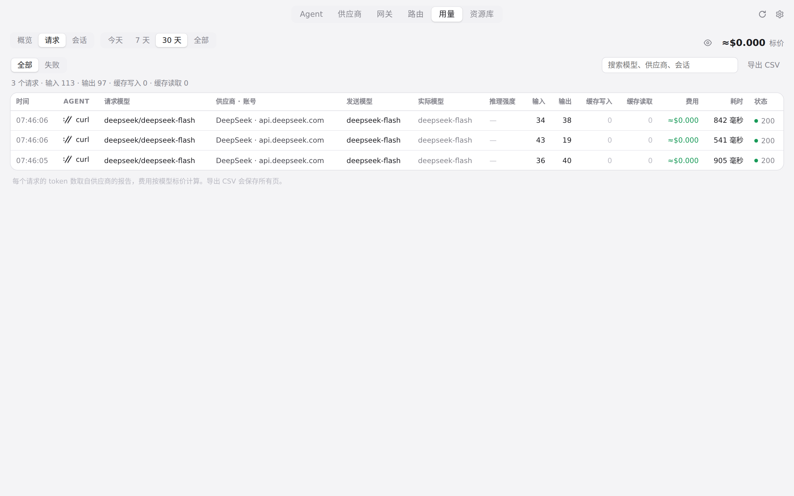
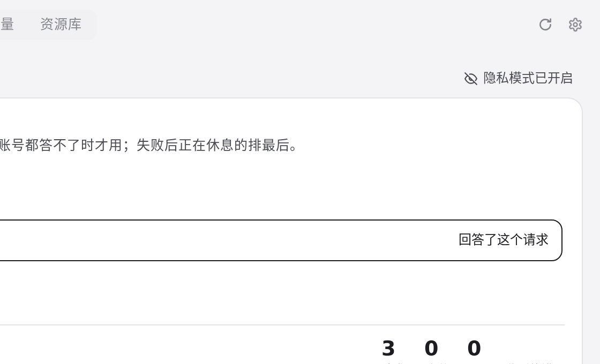
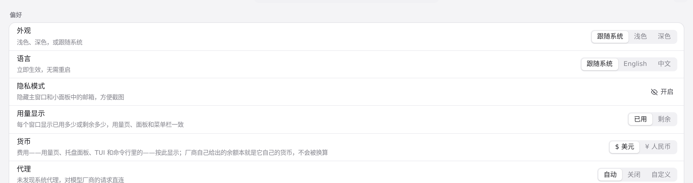
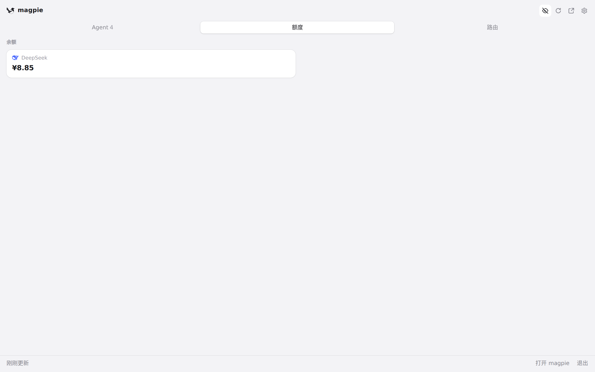

#291 界面预览
commit 21645eb · 回到 PR · PR 将原来的“隐藏邮箱”改为跨主窗口和快捷面板的共享隐私模式：用量、路由和设置页都有同一开关，快捷面板头部也有图标按钮；开启后邮箱、tooltip 和输入框值被遮罩，关闭后恢复。
红线是鼠标走过的轨迹，红色圆环是一次点击；底部文字是这一步在做什么。空格暂停，← → 逐段查看。

主窗口：用量请求、路由和设置同步 · 隐私模式关闭时，请求行中的邮箱显示
主窗口：用量请求、路由和设置同步 · 同一请求行在隐私模式开启后

主窗口：用量请求、路由和设置同步 · 路由页的隐私模式按钮与用量页同步开启

主窗口：用量请求、路由和设置同步 · 设置里新增的隐私模式行显示为开启

快捷面板：同步开关与恢复 · 额度页在隐私模式已从主窗口同步开启时显示的邮箱
快捷面板：同步开关与恢复 · 额度页在隐私模式关闭后恢复原样